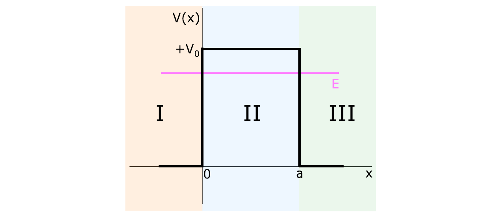

In region II, \(0<x<a\), the potential is positive, \(+V_0\), and the incident particle has \(E<V_0\). The goal is to determine the transmission and reflection coefficients for a particle incident from the left.

Figure 4.11: rectangular step potential for \(E<V_0\). The potential is \(+V_0\) in region II and zero in regions I and III.
\[\psi_{\mathrm I}(x)=Ae^{ikx}+Be^{-ikx}=\psi_i(x)+\psi_r(x),\qquad\psi_{\mathrm{III}}(x)=Fe^{ikx}=\psi_t(x)\]
\[k^2=\frac{2m}{\hbar^2}|E|>0\]
\[-\frac{\hbar^2}{2m}\frac{d^2\psi(x)}{dx^2}+|V_0|\psi(x)=|E|\psi(x)\quad\Longrightarrow\quad\frac{d^2\psi(x)}{dx^2}-\tilde{k}^{\,2}\psi(x)=0\]
\[\tilde{k}^{\,2}=k_0^2-k^2>0,\qquad k_0^2=\frac{2m|V_0|}{\hbar^2}\]
\[\psi_{\mathrm{II}}(x)=Ce^{\tilde{k}x}+De^{-\tilde{k}x}\]
Using the boundary conditions of the finite potential well and \(\alpha=A/F\), \(\beta=B/F\), \(\zeta=C/F\), and \(\delta=D/F\), the coefficients are
\[\zeta=\frac12\left(1+i\frac{k}{\tilde{k}}\right)e^{(-\tilde{k}+ik)a},\qquad\delta=\frac12\left(1-i\frac{k}{\tilde{k}}\right)e^{(\tilde{k}+ik)a}\]
\[\alpha=\left[\cosh(\tilde{k}a)-i\tilde{q}_-\sinh(\tilde{k}a)\right]e^{ika},\qquad\beta=-i\tilde{q}_+\sinh(\tilde{k}a)e^{ika}\]
\[\tilde{q}_{\pm}=\frac{k^2\pm\tilde{k}^{\,2}}{2k\tilde{k}},\qquad\tilde{q}_+^{\,2}=\tilde{q}_-^{\,2}+1\]
These ratios lead directly to the transmission coefficient.
\[T=\frac{|F|^2}{|A|^2}=\frac{1}{|\alpha|^2}\]
\[T=\frac{1}{1+\tilde{q}_+^{\,2}\sinh^2(\tilde{k}a)}\]
\[\tilde{q}_+^{\,2}=\frac{(k_0a)^4}{4(ka)^2\left[(k_0a)^2-(ka)^2\right]}\]
\[T_{k_0a}(ka)=\left[1+\frac{(k_0a)^4}{4(ka)^2\left[(k_0a)^2-(ka)^2\right]}\sinh^2\!\left(\sqrt{(k_0a)^2-(ka)^2}\right)\right]^{-1}\]
The transmission depends on \(k_0a\), which specifies the barrier height and width, and on \(ka\), which specifies the incident-particle energy.
When \((k_0a)^2\gg(ka)^2\),
\[\sinh^2x\longrightarrow\frac{e^{2x}}4,\qquad T(k_0a\gg ka)\approx16\frac{(ka)^2}{(k_0a)^2}e^{-2k_0a}\]
The transmission decreases exponentially as \(k_0a\) increases.
For \(|E|\approx|V_0|\), \(k_0a\approx ka\), and
\[\sinh^2x\longrightarrow x^2,\qquad T(k_0a\approx ka)\approx\frac{1}{1+(k_0a)^2/4}\]
This page supports guided exercises on transmission through the rectangular step potential with \(E<V_0\).
Use from this page: regional wave functions, the definitions of \(k\), \(\tilde{k}\), and the transmission coefficient.Keep in the book: the full boundary-condition algebra for the coefficients.Good exercise balance: identify the energy range, select the regional function, then calculate \(T\).
Use these anchors to build compact exercises from the rectangular-step calculation.
Focus: \(E<V_0\) and the transmission coefficient.Conceptual check: identify why the region-II solution contains real exponentials.Key equation: \[T=\frac{1}{1+\tilde{q}_+^{\,2}\sinh^2(\tilde{k}a)},\qquad\tilde{q}_+=\frac{k^2+\tilde{k}^{\,2}}{2k\tilde{k}}\]Definitions: \[k^2=\frac{2m|E|}{\hbar^2},\qquad\tilde{k}^{\,2}=k_0^2-k^2,\qquad k_0^2=\frac{2m|V_0|}{\hbar^2}\]Boundary: use the regional solutions and the listed ratios for setup; use the book for the full coefficient algebra.Typical task: obtain \(T\) in either limiting case.Original book and previews: Source note: Original auxiliary summary for this book-app, based on Chapter 4 of Mario Reis, Quantum Mechanics , Elsevier, 2026. Book text and figures are copyright © 2026 Elsevier Inc.; consult the original book for the complete presentation, derivations and exercises.